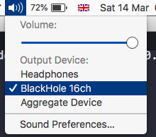
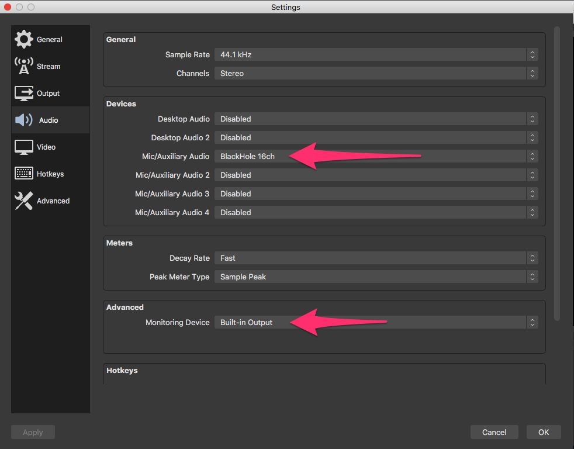
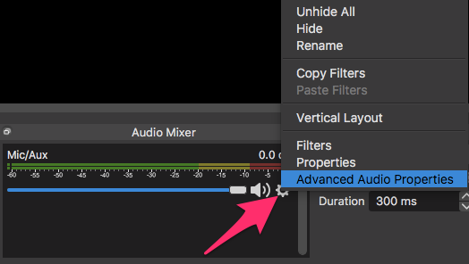
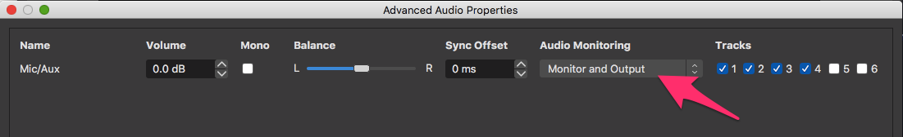
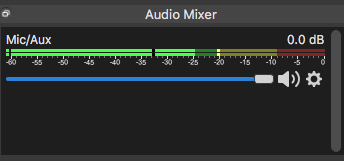

August 24, 2023
Just heard that my new piece ‘El laberinto’ for voice, bass clarinet and general MIDI is going to be performed by Stephanie Lamprea and Alex South at the Scottish Awards for New Music 2023 on 1st September.

I say ’new piece’ – effectively this is revisiting and recontextualisation of an earlier piece ‘El laberinto de mi mente’.
Here’s what I’ve written about the new version:
The world has changed a lot since 1998, and I feel much less comfortable about my place in it. Was I only able to become a ‘composer’ thanks to the the middle class white male privilege that gave me the confidence, agency and status to do so? Is there any value to my work, or is it just a self-indulgence? Am I privileged to be able to even ask that question?
The writing for the voice and clarinet is inspired by a tradition of wordless virtuoso unison lines most commonly associated perhaps with Carnatic/jazz fusions. The accompaniment makes self-consciously nostalgic use of General MIDI sounds in a Standard MIDI File, rewinding back to those naively happy days of plain text, ISDN dialup and minidiscs.
...
February 5, 2023
During January 2023 a number of people active in the livecoding community participated together in a ‘patternuary’ https://club.tidalcycles.org/t/patternuary-2023/4474/1 aiming to make one pattern every day during the month.
Some people worked in TidalCycles https://tidalcycles.org/, while many chose to use the Strudel platform https://strudel.tidalcycles.org/.
Some of the patterns were posted on the Tidal Club thread above, while many otherers appeared under the #patternuary thread on Mastodon https://post.lurk.org/tags/patternuary.
Given the strong likelihood of bitrot, I created a single video https://archive.org/details/jsvdwpatternuary2023 that captures brief excerpts of all of the patterns I made: mostly in Strudel, but also in SuperCollider, Pd and one composition notated in MuseScore.
The audio is also released as an album on bandcamp: https://tedthetrumpet.bandcamp.com/album/everyday-jan-63

(Most of) the code is available as a gist https://gist.github.com/tedthetrumpet/0410ae1cd2ad0a2837a36aca94e5b5ea
...
December 23, 2022
So, here’s how it turned out: attempting to ’livecode’ Audacity by saving a file out periodically to SuperCollider. A slow start, but gets more interesting towards the end of the twenty minutes.
https://youtu.be/0YpgHdJY-Kw
Also available here https://archive.org/details/nightstream-dec-2022-tedthetrumpet
December 20, 2022
Had a slightly crazy idea for the TidalClub Night Stream on 2022-12-21 – could I livecode something in Audacity?!?
Obviously the answer is basically no, as you can’t edit anything in Audacity while it is playing. So, instead, the plan is to use some of the things in the Generate menu to improvise some sounds: the Risset Drum, Rhythm Track, DTMF Tones and so on.
Once I have a minute’s worth I, save out a mixdown to disk. Then, I have a script running in SuperCollider that waits a minute, then reloads the latest file exported from Audacity. So, in theory, I have a minute to create the next layer in Audacity while the last layer is playing.
For some reason, I decided to bill the performance as a ‘dangdut’, so I also have some simple algorithmically generated dangdut-ish material ready to go in SuperCollider that can be played alongside the much more abstract Audacity material.
Quick proof-of-concept video:
https://youtu.be/x2XVkoGofQ8
...
December 20, 2021
I’ve been teaching some of the composition students at the Royal Conservatoire of Scotland how to livecode in Estuary, and we’re going to do a short set as part of The Longest Night. Here’s the test I just did for that, which sort of counts as another one of my tiny estuary jams – not a very interesting one!
https://youtu.be/bTJdRI9Zhzs
December 3, 2021
I seem to have started doing that thing where I post a small piece of work each day: so far, four very short jam sessions in Estuary:
https://youtu.be/MeCpvXLMQe4
https://youtu.be/b5MQBuA5SWA
https://youtu.be/ddkhm-JRj5I
https://youtu.be/dRgQwRuUYsM
March 10, 2021
This posting shows how I was able to get the sounds of the pelog half of the Spirit of Hope gamelan here in Glasgow to work in GarageBand on an iPad.
First install an app called ‘SoundFonts’ from the App Store: it’s £4.99.

Go to this link https://archive.org/download/sohgamelanbalunganpelog, and download the file called SoH Gamelan balungan pelog.sf2

The file should end up saved in the Downloads folder in iCloud Drive.

Open the SoundFonts app and click the + button.

This took me straight to the correct file in iCloud Drive: you might have to browse to find it though. Select the file to import it to the SoundFonts app.

Once you select the sound called ‘balungan_pelog’ you should be able to play it. You might need to change octave to get all of the sounds, there should be slenthem, demung, saron and peking.

Repeat the process above to download the other soundfont, that includes gongs, kenongs, kethuk and drums. Here is the link https://archive.org/download/so-h-gamelan-gongs-drums-etc-pelog

To use the sounds in GarageBand, you need to find – I don’t know what it is called, this track browser thing! – and select the ‘External’ pane.

Select the SoundFonts icon

And you can now play and record tracks using the gamelan samples in GarageBand!


...
December 21, 2020
The tempation to ‘share’ on proprietary online platforms means that I don’t document my work here as frequently as I should! So, here’s a roundup of some things I’ve produced this year: as much a reminder to myself as anything else.
- February
- ‘Perang Gagal: a Series of Inconclusive Battles’ at ICLC Limerick
- March
- two performances at Euleroom Equinox, a busk followed later by the ‘official’ set
- track ’threequal’ on SoundArtist.ru mixtape
- April
- curated two gamelan soundfonts, released on archive.org
- May
- July
- Performed with Gamelan Naga Mas at the Network Music Festival
- October
- 7 Calls collaboration with Mags Smith of Good Vibrations
- December
- two sets (sort of!) at Euleroom Solistice: ‘official’ performance and crazy spontaneous chaotic jam session:
...
December 14, 2020
This is just a quick post to pull together links to a number of places online where I have offered up gamelan sounds for download. It’s all a bit chaotic! Most of these are from the pelog Spirit of Hope instruments in Glasgow, sometimes retuned. Some of them may be from other sources that I’ve forgotten about.
From my perspective, these are all inteneded to be CC0 ‘No rights reserved’ – you can do what you like with them!
If I’ve accidentally uploaded someone else’s sample here and you want me to take it down, please let me know.
https://freesound.org/people/tedthetrumpet/packs/14/
https://freesound.org/people/tedthetrumpet/packs/1797/
https://archive.org/details/so-h-gamelan-gongs-drums-etc-pelog
https://archive.org/details/sohgamelanbalunganpelog
https://github.com/tedthetrumpet/Perang-Gagal/tree/master/SuperCollider/arum
...
March 14, 2020
The principle here is that sound is sent from SuperCollider to the virtual audio driver BlackHole, and from BlackHole to OBS. You then listen to the sound through OBS.
Install https://github.com/ExistentialAudio/BlackHole

Set the mac sound output to ‘BlackHole 16ch’ using the widget in the menu bar:

Boot or reboot the server in SuperCollider – this is a key step, the SC server will not pick up a change of audio device without a fresh boot or a reboot:

After boot, check that the SC post window says ‘“BlackHole 16ch” Output Device’:

(If you’re using Tidal you’ll need to run SuperDirt.start here again.)
In OBS, click on ‘Settings’ and go to the ‘Audio’ pane. Set ‘Mic/Auxillary Audio’ to ‘BlackHole 16ch’ and ‘Monitoring Device’ to ‘Built-in Output’:

In OBS, look for a gear icon for settings in the Audio Mixer panel select ‘Advanced Audio Properties’:

Under Audio Monitoring select ‘Monitor and Output’:

Play a sound in SuperCollider. In OBS, turn up the slider in the Audio Mixer Panel, and you should see the Mic/Aux slider picking up sound:


Sound should now be playing from SC into OBS and through into your speakers/headphones. Adjust volume as usual from the widget in the menu bar.
Update: it seems that on macOS 10.15 you may need to go back to the volume widget in the menu bar and select the output you want to hear there. (I can’t test this directly, I’m still on 10.13).
...


{kind=link}
{kind=link}